공조냉동기계기사(구) (2010-07-25 기출문제)
1과목: 기계열역학
1. 대기 압력이 0.099 NPa 일 때 용기 내 기체의 게이지 압력이 1 MPa이었다. 기체의 절대 압력은 몇 MPa 인가?
- 0.901
- 1.099
- 1.135
- 1.275
(정답률: 85%)

2. 압력이 287 kPa 일 때 1m3의 공기 질량이 2 kg이었다. 이 때 공기의 온도(℃)는? (단, 공기의 기체상수 R=287 J/kgㆍK 이다.)
- 773
- 500
- 400
- 227
(정답률: 64%)
3. 이상기체의 비열비(k) 및 기체상수(R)을 징적비열(Cv)과 정압비열(Cp)로 나타낸 것으로 옳은 것은?
- Cp - Cv=k, Cv/Cp=R
- Cv - Cp=k, Cv/Cp=R
- Cp - Cv=R, Cv/Cp=k
- Cp - Cv=R, Cp/Cv=k
(정답률: 69%)
4. 가역 과정으로 실린더 안의 공기를 50kPa, 10℃ 상태에서 300 kPa 까지 압력과 체적의관계가 “PV1.3=일정” 인 과정으로 압축할 때 이상기체로 가정하고 단위질량당 방출되는 열전달량은? (단, 이상기체 공기의 기체 상수는 0.287 kJ/kgㆍK 이고, 정적비열은 0.7 kJ/kgㆍK이다.)
- 17.2 kJ/kg
- 37.2 kJ/kg
- 57.2 kJ/kg
- 77.2 kJ/kg
(정답률: 36%)
5. 카르노사이클로 작동되는 열기관이 200kJ의 열을 200℃에서 공급받아 20℃에서 방출한다면 이 기관의 일은 약 얼마인가?
- 20 kJ
- 76 kJ
- 124 kJ
- 180 kJ
(정답률: 55%)
6. 비가역 과정의 요인이 아닌 것은?
- 마찰
- 유한한 온도차에 의한 열전달
- 등온변환
- 기체의 자유팽창
(정답률: 67%)
7. 다음 중 이상 Rankine 사이클과 Carnot 사이클의 유사성이 가장 큰 두 과정은?
- 등온가열, 등압방열
- 단열팽창, 등온방열
- 단열압축, 등온가열
- 단열팽창, 등적가열
(정답률: 62%)
8. 보일러에 시간당 380000 kg의 물을 공급하여 수증기를 생산한다. 공급되는 물의 엔탈피는 830 kJ/kg 이고, 생산되는 수증기의 엔탈피는 3230 kJ/kg 이다. 발열량이 32000 kJ/kg 인 석탄을 시간당 34000 kg 씩 보일러에 공급한다. 이 보일러의 효율은?
- 22.6%
- 39.5%
- 72.3%
- 83.8%
(정답률: 57%)
9. 600 kPa, 300K 상태의 아르곤(argon), 기체 1 kmol 이 엔탈피가 일정한 과정을 거쳐 압력이 원래의 1/3 배가 되었다. 일반기체상수
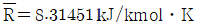
이다. 이 과정 동안 아르곤(이상기체)의 엔트로피 변화량은?- 0.782 kJ/K
- 8.31 kJ/K
- 9.13 kJ/K
- 60.0 kJ/K
(정답률: 42%)
10. 시스템의 열역학적 상태를 기술하는 데 열역학적 상태량(또는 성질)이 사용된다. 다음 중 열역학적 상태량으로 올바르게 짝지어진 것은?
- 열, 일
- 엔탈피, 엔트로피
- 열, 엔탈피
- 일, 엔트로피
(정답률: 72%)
11. 열(heat)과 일(work)에 대한 설명으로 틀린 것은?
- 계의 상태변화 과정에서 나타날 수 있다.
- 계의 경계에서 관찰된다.
- 경로함수(path function)이다.
- 전달된 일과 열의 합은 항상 일정하다.
(정답률: 66%)
12. 실린더 내부에 기체가 채워져 있고 실린더에는 피스톤이 끼워져 있으며 피스톤 위에는 추가 놓여 있다. 초기 압력 100 kPa, 포기 체적 0.1m3인 기체를 버너로 압력을 일정하게 유지하며 가열하여 기체 체적이 0.5m3이 되었다면 이 과정 동안 시스템이 한 일은?
- 10 kJ
- 20 kJ
- 30 kJ
- 40 kJ
(정답률: 81%)
13. 질량 유량이 10 kg/s인 터빈에서 수증기의 엔탈피가 800 kJ/kg 감소한다면 출력은 몇 KW인가? (단, 역학적 손실, 열손실은 무시한다.)
- 2000
- 4000
- 6000
- 8000
(정답률: 76%)
14. 실린더 내의 유체가 68 kJ/kg의 일을 받고 주위에 36 kJ/kg의 열을 방출하였다. 내부 에너지의 변화는?
- 32 kJ/kg 증가
- 32 kJ/kg 감소
- 104 kJ/kg 증가
- 104 kJ/kg 감소
(정답률: 69%)
15. 시스템의 경계 안에 비가역성이 존재하지 않는 내적 가역과정을 온도-엔트로피 선도 상에 표시하였을 때 이 과정 아래의 면적은 무엇을 나타내는가?
- 일량
- 내부에너지 변화량
- 열전달량
- 엔탈피 변화량
(정답률: 60%)
16. 마찰이 없는 피스톤에 12℃, 150kPa의 공기 1.2kg이 들어있다. 이 공기가 600 kPa로 압축되는 동안 외부로 열이 전달되어 온도는 일정하게 유지되었다. 이 과정에서 행해진 일은 약 얼마인가? (단, 공기의 기체 상수는 0.287 kJ/kgㆍK 이며, 이상기체로 가정한다.)
- -136 kJ
- -100 kJ
- -13.6 kJ
- -10 kJ
(정답률: 58%)
17. 그림과 같은 Rankine 사이클의 열효율은 얼마인가? (단, h1=191.8 kJ/kg, h2=193.8 kJ/kg, h3=2799.5 kJ/kg, h4=2007.5 kJ/kg 이다.)
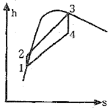
- 30.3%
- 39.7%
- 46.9%
- 93.1%
(정답률: 58%)
18. 어떤 냉동기에서 0℃의 물로 0℃의 얼음 2 ton을 만드는데 50 kWh의 일이 소요된다면 이 냉동기의 성능계수는? (단, 얼음의 융해잠열은 334.94 kJ/kg 이다.)
- 1.⑤
- 2.32
- 2.67
- 3.72
(정답률: 59%)
19. 그림에서 T1=561 K, T2=1010 K, T3=690 K, T4=383 K인 공기(Cp=1.00 kJ/kgㆍ℃)를 작동유체로 하는 브레이턴 사이클(Brayton cycle)의 이론 열효율은?
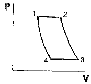
- 0.388
- 0.444
- 0.316
- 0.412
(정답률: 45%)
20. 비열비 k=Cp/Cu의 값은? (단, Cp : 정압비열, Cv : 정적비열 이다.)
- 1보다 작다
- 1보다 크다
- 1보다 클 수도 있고, 작을 수도 있다.
- 1과 같다.
(정답률: 79%)
2과목: 냉동공학
21. 고온가스 제상(Hot gas defrost)방식에 대하여 설명한 것이다. 관계가 먼 것은?
- 압축기의 고온 고압가스를 이용한다.
- 소형 냉동장치에 사용하면 언제라도 정상운전을 할 수 있다.
- 비교적 설비하기가 용이하다.
- 제상 소요시간이 비교적 짧다.
(정답률: 68%)
22. 흡수식 냉동장치에서 열손실이 없을 경우 재생기에서의 열량을 QG, 응축기에서의 열량을 QC, 증발기에서의 열량을 QE, 흡수기에서의 열량을 QA라고 할 때 전체의 열평형식으로 올바른 것은?
- QG=QE+QC+QA
- QG+QC=QE+QA
- QG+QA=QC+QE
- QG+QE=QC+QA
(정답률: 41%)
23. 왕복동 냉동기에서 -30~-70℃ 정도의 저온을 얻기 위하여 2단 압축방식을 채용하고 있다. 그 이유를 설명한 것 중 옳은 것은?
- 토출가스 온도를 낮추기 위하여
- 압축기의 효율 향상을 막기 위하여
- 윤활유의 온도상승을 하기 위하여
- 성적계수를 낮추기 위하여
(정답률: 78%)
24. 압축기 실린더의 체적효율이 감소되는 경우가 아닌 것은?
- 클리어런스(clearance)가 작을 경우
- 흡입ㆍ토출밸브에서 누설될 경우
- 실린더 피스톤이 과열될 경우
- 회전속도가 빨라질 경우
(정답률: 67%)
25. 25℃ 원수 1ton을 1일 동안에 -9℃의 얼음으로 만드는데 필요한 냉동능력은 약 얼마인가? (단, 외부 열손실은 20%, 동결잠열 80kcal, 1RT=3320kcal/h 로 한다.)
- 1.65냉동톤(RT)
- 2.65냉동톤(RT)
- 1.88냉동톤(RT)
- 2.88냉동톤(RT)
(정답률: 72%)
26. 브라인 사용 냉각장치의 동파 방지책으로 틀린 것은?
- 부동액을 첨가한다.
- 단수 릴레이를 설치한다.
- 동결방지용 TC(Thermostat Control)를 설치한다.
- 흡입압력 조절밸브를 설치한다.
(정답률: 61%)
27. 냉동기의 압축기 윤활목적이 아닌 것은?
- 마찰을 감소시켜 마모를 적게 한다.
- 패킹재를 보호한다.
- 열을 발생한다.
- 피스톤, 스터핑박스 등에서 냉매누출을 방지한다.
(정답률: 73%)
28. 전열면적 13m2 수냉식 응축기에서 냉각수 입구온도 32℃, 출구온도 37℃, 수량 220ℓ/min일 때 냉매의 응축온도는 약 몇 ℃인가? (단, 열통과율 K는 800 kcal/m2h℃이고, 열손실은 무시하며 응축온도와 냉각수 온도의 차는 산술평균 온도차를 사용한다.)
- 43.3
- 38.3
- 45.1
- 40.8
(정답률: 53%)
29. 냉동장치 내 유압이 올라가지 않는 원인으로 옳지 않는 것은?
- 크랭크케이스 내에서 포밍이 일어난다.
- 기름의 온도가 낮다.
- 압축기의 축봉이 마모되었다.
- 저압이 너무 낮다.
(정답률: 48%)
30. R-22를 냉매로 하는 열펌프장치가 그림과 같이 운전되고 있을 때 이 열펌프의 성적계수는 약 얼마인가?
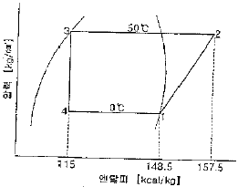
- 2.7
- 3.7
- 4.7
- 5.7
(정답률: 41%)
31. 냉동시스템 운전중 냉각탑 수조내 물의 온도가 갑자기 상승하는 원인으로 틀린 것은?
- 수동 급수밸브가 열려있다.
- 팬 또는 전동기가 고장이다.
- 공기 흡입구 및 흡출구에 장애물이 붙었다.
- 물의 분무가 불균등하다.
(정답률: 68%)
32. 냉동장치 중 압축기의 토출압력이 너무 높은 경우의 원인으로 옳지 않는 것은?
- 공기가 냉매 계통에 흡입하였다.
- 냉매 충전량이 부족하다.
- 냉각수 온도가 높거나 유량이 부족하다.
- 응축기내 냉매배관 및 전열판이 오염되었다.
(정답률: 69%)
33. 냉매액 강제순환식 증발기에 대한 설명 중 틀린 것은?
- 냉매액이 충분한 속도로 순환되므로 타 증발기에 비해 전열이 좋다.
- 일반적으로 설비가 복잡하며 대용량의 저온냉장실이나 급속 동결장치에 사용한다.
- 강제 순환식이므로 증발기에 오일이 고일 염려가 적고 배관 저항에 의한 압력강하도 보강된다.
- 냉매액에 의한 리키드백(loquid back)의 발생이 적으며 저압 수액기와 액펌프의 위치에 제한이 없다.
(정답률: 67%)
34. 스크류(screw) 압축기의 특징을 설명한 것으로 틀린 것은?
- 동일 용량의 왕복동식 압축기에 비해 부품의 수가 적고 수명이 길다.
- 10~100% 사이의 무단계 용량제어가 되므로 자동운전에 적합하다.
- 타 압축기에 비해 오일 해머의 발생이 적다.
- 소형 경량이긴 하나 진동이 많으므로 견고한 기초가 필요하다.
(정답률: 56%)
35. 팽창 밸브에 관한 설명 중에서 맞는 것은?
- 정압식 팽창 밸브는 큰 용량에만 사용된다.
- 온도식 자동 팽창 밸브는 감온통이 고온을 받으면 냉매의 유량이 증가된다.
- 모세관은 대형냉장고 또는 수냉식 콘덴싱 유니트 등에만 적용되고, 소형에는 적용되지 않는다.
- 수동식 팽창밸브에는 플로트식이 있다.
(정답률: 62%)
36. 증발식 응축기에 관한 설명으로 옳은 것은?
- 외기의 습구온도 영향을 많이 받는다.
- 외부공기가 깨끗한 곳에서는 엘리미네이터(eliminator)를 설치할 필요가 없다.
- 공급수의 양은 물의 증발량과 엘리미네이터에서 배제하는 양을 가산한 양으로 충분하다.
- 냉각 작용은 물을 살포하는 것만으로 한다.
(정답률: 71%)
37. 냉동장치에서 일원 냉동사이클과 이원 냉동사이클과의 가장 큰 차이점은?
- 압축기의 대수
- 증발기의 수
- 냉동장치내의 냉매 종류
- 중간냉각기의 유무
(정답률: 72%)
38. 최근 에너지를 효율적으로 사용하자는 측면에서 빙축열 시스템이 보급되고 있다. 빙축열시스템의 분류에 대한 조합으로 적당하지 않은 것은?
- 정적형 - 관외착빙형
- 정적형 - 빙박리형
- 동적형 - 리키드아이스형
- 동적형 - 과냉각아이스형
(정답률: 53%)
39. 제빙장치에서 두께가 29 cm인 얼음을 만드는데 48시간이 걸렸다. 이때의 브라인 온도는 약 몇 ℃인가?
- 0℃
- -10℃
- -20℃
- -30℃
(정답률: 58%)
40. 암모니아를 냉매로 사용하는 냉동설비에서 시운전에 사용하면 안 되는 기체는?
- 이산화탄소
- 산소
- 질소
- 일반공기
(정답률: 57%)
3과목: 공기조화
41. 습공기의 상태변화에 대한 설명이다. 옳은 것은?
- 현열비를 알면 이 부하를 감당하기 위한 송풍 온도 및 습도를 결정할 수 있다.
- 가습과정에서 열수분비의 값으로 공기상태가 변화되는 방향을 예측할 수 없다.
- 냉각코일의 표면온도가 코일을 통과하는 공기의 노점보다 높은 경우 제습이 이루어진다.
- 냉각 제습과정에서는 열평형식 만으로 에너지 불변의 법칙을 만족한다.
(정답률: 46%)
42. 어떤 공조기의 풍량이 35000 kg/h, 코일통과 풍속을 2.5 m/s로 할 때 냉수코일의 전면적(前面積)은 약 얼마인가?
- 4.86m2
- 3.24m2
- 3.89m2
- 1.34m2
(정답률: 36%)
43. 증기난방 배관의 수평주관에서 관경이 작아지는 경우의 배관 방법으로 가장 적합한 것은?
- 이경 니폴을 사용하여 관경을 줄인다.
- 동심형 이경 이음쇠를 사용하여 관경을 줄인다.
- 편심형 이경 이음쇠를 사용하여 저면을 일정한 높이로 한다.
- 편심형 이경 이음쇠를 사용하여 상면을 일정한 높이로 한다.
(정답률: 63%)
44. 열원기기 선정의 기본적 사항으로 거리가 먼 것은?
- 공조부하
- 기계실 위치
- 공해문제
- 운전시간
(정답률: 56%)
45. 습공기의 상태변화에 관한 설명 중 틀린 것은?
- 습공기를 가열하면 건구온도와 상대습도가 상승한다.
- 습공기를 냉각하면 건구온도와 습구온도가 내려간다.
- 습공기를 노점온도 이하로 냉각하면 절대습도가 내려간다.
- 냉방할 때 실내로 송풍되는 공기는 일반적으로 실내공기보다 냉각감습 되어 있다.
(정답률: 57%)
46. 다음에서 온수난방 설비용 기기가 아닌 것은?
- 릴리프 밸브
- 순환펌프
- 관말트랩
- 팽창탱크
(정답률: 72%)
47. 다음은 단일덕트 방식에 대한 설명이다. 관계없는 것은?
- 중앙기계실에 설치한 공기조화기에서 조화한 공기를 주 덕트를 통해 각 실로 분배한다.
- 단일덕트 일정풍량 방식은 개별제어에 적합하다.
- 단일덕트 방식에서는 큰 덕트 스페이스를 필요로 한다.
- 단일덕트 일정 풍량 방식에서는 재열을 필요로 할 때도 있다.
(정답률: 71%)
48. 다음 중 전공기방식이 아닌 것은?
- 이중 덕트 방식
- 단일 덕트 방식
- 멀티존 유닛 방식
- 유인 유닛 방식
(정답률: 71%)
49. 냉난방부하가 기기 용량과의 관계를 나타낸 것이다. 옳은 것은?
- 송풍량=실내취득열량+기기로부터의 취득열량
- 냉각코일 용량=실내취득열량+외기부하
- 냉동기 용량=실내취득열량+기기로부터의 취득열량+펌프 및 배관부하
- 순수 보일러 용량=난방부하+배관부하
(정답률: 64%)
50. 여름철 외기온도가 30℃일 때 실내의 전열부하가 6000kcal/h, SHF=0.83인 방을 26℃로 냉방하고자 한다. 이때의 실내 송풍량은 약 몇 m3/h인가? (단, 송풍기의 취출온도는 15℃, 건공기의 정압비열 0.24 kcal/kg℃. 비중량 1.2kg/m3, 덕트에 의한 열취득은 무시 한다.)
- 1153m3/h
- 1389m3/h
- 1572m3/h
- 1894m3/h
(정답률: 42%)
51. 다음 중 보일러의 효율 η(%)을 옳게 나타낸 것은? (단, q(kcal/h) : 보일러 발생열량, G(kg/h) : 연료소비량, h(kcal/kg) : 연료의 저위발열량 이다.)
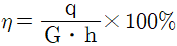
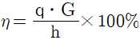
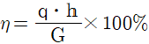
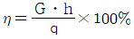
(정답률: 65%)
52. 다음 복사난방에 대한 내용이다. 잘못된 것은?
- 실내 높이에 따른 온도 분포가 균등하고 쾌적하다.
- 대류가 적어서 바닥면의 먼지가 상승하지 않고 실내 바닥 면적의 이용도가 높다.
- 천장이 높은 경우에 유효하며 개방된 방에서도 난방효과가 있다.
- 동일 방열량에 대해 손실열량이 크다.
(정답률: 61%)
53. 냉각탑의 설명 중 옳은 것은?
- 냉각탑 출구의 수은과 출구공기의 습구온도와의 차를 어프로치(approach)라 한다.
- 냉각탑의 내부에는 수적이 공기와 접촉하는 면적을 증가시키기 위해 충전재를 설치하고 있다.
- 냉각탑에서의 보급수량은 일반적으로 순환수량의 10~15%이다.
- 냉각탑에서는 물이 대기와 직접 접촉하므로 대기중의 아황산가스 등을 흡수하여 알칼리성이 된다.
(정답률: 37%)
54. 주형 방열기의 도시법에서 가장 상단에 표시되는 것은?
- 유입관의 크기
- 유출관의 크기
- 절(section)수
- 방열기의 종류와 높이
(정답률: 77%)
55. 습공기의 수증기 분압을 Pv, 동일온도의 포화 수증기압을 Ps라 할 때 다음 중 잘못된 것은?
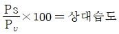
- Pυ＜Ps 일 때 불포화습공기
- Pυ=Ps 일 때 포화습공기
- Pυ=0 일 때 건공기
(정답률: 71%)
56. 난방부하가 13000 kcal/h인 사무실을 증기난방 하고자 할 때 방열기의 소요방열 면적은 약 몇 m2 인가? (단, 방열기의 방열량은 표준방열량으로 한다.)
- 20
- 21.7
- 28.9
- 32.5
(정답률: 62%)
57. 다음 그림에 대한 설명 중 틀린 것은 어느 것인가? (단, 하정기 공기조화 과정이다.)
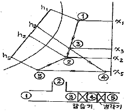
- 실내공기 ①과 외기 ②를 혼합하면 ③이 된다.
- ③을 감습기에 통과시키면 엔탈피 변화없이 감습된다.
- 응축열로 인하여 습구온도 일정선상에서 온도가 상승하여 ④에 이른다.
- ⑤까지 냉각하여 취출하면 실내에서 취득열량을 얻어 ②에 이른다.
(정답률: 56%)
58. 다음 중 증기 보일러의 상당(환산) 증발량(Ge)은? (단, Gs는 실제증발량, Gw는 보일러의 급수량, h1은 급수의 엔탈피, h2는 발생증기의 엔탈피이다.)
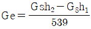
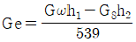
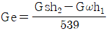
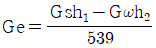
(정답률: 35%)
59. 가변풍량 방식의 특징에 관한 설명으로 옳지 않은 것은?
- 시운전시 토출구의 풍량 조정이 간단하다.
- 등시부하율을 고려하여 기기용량을 결정하게 되므로 설비용량을 적게할 수 있다.
- 부하변동에 대하여 제어응답이 빠르므로 거주성이 향상된다.
- 덕트의 설계시공이 복잡해진다.
(정답률: 53%)
60. 건축 구조체의 열통과율에 대한 설명 중 가장 옳은 것은?
- 열 통과율은 구조체 표면 열전달 및 구조체내 열전도율에 대한 열이동의 과정을 총 합한 계수를 말한다.
- 표면 열전달 저항이 커지면 열통과율도 커진다.
- 수평구조체의 경우 상향열류가 하향열류보다 열통과율이 작다.
- 각종 재료의 열전도율은 대부분 함습율의 증가로 인하여 열전도율이 작아진다.
(정답률: 71%)
4과목: 전기제어공학
61. 폐회로로 구성되어 있으며, 정량적인 제어명령에 의하여 제어하는 방식은?
- 시한제어
- 피드백제어
- 순서제어
- 조건제어
(정답률: 76%)
62. 일정 전압의 직류전원에 저항(R)을 접속하고 전류를 흘릴 때 이 전류값을 20% 증가시키기 위해서는 저항값을 얼마로 하여야 하는가?
- 0.64R
- 0.83R
- 1.20R
- 1.25R
(정답률: 54%)
63. 추종제어에 속하지 않는 제어량은?
- 위치
- 방위
- 자세
- 유량
(정답률: 68%)
64. 3상 전력을 측정하는 3전력계법에서 각상의 전역계의 지시값은 어떤 값을 나타내는가?
- 최대값
- 순시값
- 실효값
- 평균값
(정답률: 31%)
65. 그림은 노즐ㆍ플래퍼의 동작 상태를 나타낸 것이다. 노즐ㆍ플래퍼의 특성 곡선으로 알맞은 것은? (단, 노즐ㆍ플래퍼의 간격은 δ, 노즐의 배압은 P 이다.)
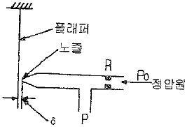
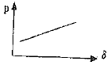
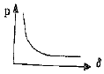
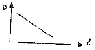
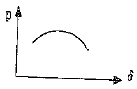
(정답률: 57%)
66. 다음 블록선도의 전달함수는?
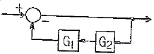
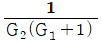
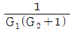
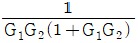
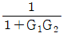
(정답률: 71%)
67. 다음 중 전자력과 전자유도 등 자기회로에 대한 설명 중 맞지 않는 것은?
- 자력선은 N극으로부터 S극으로 향하는 것이 자력선 성질의 원칙이며 자력선 방향은 오른 나사법칙에 의한다.
- 단위 시간에 대한 자속의 변화량이 기전력을 나타내는것이 전자유도법칙이라 하며 패러데이법칙이 이에 속한다.
- 어떤 코일에 흐르는 전류가 변화하면 코일과 쇄교하는 자속이 변화하므로 이 코일에 기전력이 유도되는 것을 자기유도라 한다.
- 자계 안에 놓여 있는 도선에 전류가 흐를 때 도선이 받는 힘의 방향은 플레밍의 오른손 법칙에 의거해서 동작되게 한다.
(정답률: 60%)
68. 미리 정해진 프로그램에 따라 제어량을 변화시키는 것을 목적으로 하는 제어는?
- 정치제어
- 추종제어
- 프로그램제어
- 비례제어
(정답률: 70%)
69. 다음과 같이 저항이 연결된 회로의 a점과 b점의 전위가 일치할 때, 저항 R1과 R5의 값 [Ω]은?
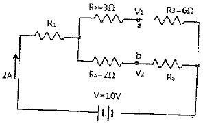
- R1=4.5Ω, R5=4Ω
- R1=1.4Ω, R5=4Ω
- R1=4Ω, R5=1.4Ω
- R1=4Ω, R5=4.5Ω
(정답률: 53%)
70. 그림에서 응답이 일정한 진폭으로 진동하는 선도는?
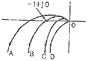
- A
- B
- C
- D
(정답률: 56%)
71. 단자전압 300v, 전기자저항 0.3[Ω]의 직류분권발전기가 있다. 전부하의 경우 전기자전류가 50[A] 흐른다고 할 때 이 정동기의 기동전류를 정격시의 1.7배로 하려면 기동저항은 약 몇 [Ω] 인가?
- 2.8
- 3.2
- 3.5
- 3.8
(정답률: 39%)
72. 3대의 단상변압기를 결선하여 사용 중 1대가 고장이 났을 경우 2대의 단상변압기로 V-V결선을 하여 사용할 수 있는 변압기 결선방법은?
- △-Y
- Y-△
- △-△
- Y-Y
(정답률: 62%)
73. 두 개의 안정된 상태를 갖는 쌍안정 멀티바이브레이터를 이용한 것으로 셋(Set) 입력으로 출력이 생기고 리셋(Reset) 입력으로 출력이 없어지는 회로는?
- 기동우선회로
- 정지우선회로
- 플립플롭회로
- 리플카운터회로
(정답률: 61%)
74. 그림과 같은 R-L-C 회로에서 R=4[Ω], XL=5[Ω], Xc=2[Ω], E=100[V]일 때 이 회로에 흐르는 전류는 몇 [A] 인가?
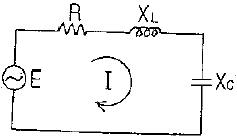
- 10
- 15
- 20
- 25
(정답률: 50%)
75. 시퀀스 제어에 관한 설명으로 옳지 않은 것은?
- 조합논리회로가 사용된다.
- 폐회로 제어계로 사용된다.
- 제어용 계전기가 사용된다.
- 시간지연요소가 사용된다.
(정답률: 65%)
76. PI 제어동작은 공정제어계의 무엇을 개선하기 위하여 사용되고 있는가?
- 이득
- 속응성
- 안정도
- 정상특성
(정답률: 46%)
77. 동작신호를 조작량으로 변환하는 요소는?
- 제어요소
- 피드백요소
- 기준입력요소
- 외란요소
(정답률: 64%)
78. 속도제어가 비교적 간단하고 기동토크가 크므로 고도의 속도제어가 요구되는 장소나, 큰 기둥 토크를 필요로 하는 엘리베이터나 전차 등에 사용되는 전동기는?
- 직류전동기
- 유도전동기
- 동기전동기
- 스텝전동기
(정답률: 43%)
79. 다음 그림(a)와 그림(b)의 블록선도가 등가가 되기 위하여 A에 들어갈 전달함수는?
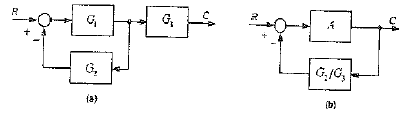
- G1G2
- G2
- G1G3
- G3
(정답률: 41%)
80. 그림과 같은 R-L 직렬회로에서 공급전압이 10V 일 때 VR=8V 이면 VL은 몇 [V]인가?
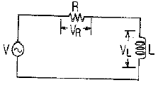
- 2
- 4
- 6
- 8
(정답률: 49%)
5과목: 배관일반
81. 기계급기와 자연배기에 의한 환기방식으로 주로 클린룸과 수술실 등에서 주로 적응하는 환기법은?
- 1종환기법
- 2종환기법
- 3종환기법
- 4종환기법
(정답률: 72%)
82. 비관계통 중 펌프에서의 공동현상(cavitation)을 방지하기 위한 대책으로해당되지 않는 것은?
- 펌프의 설피 위치를 낮춘다.
- 회전수를 줄인다.
- 양흡입을 단흡입으로 바꾼다.
- 굴곡부를 적게하여 흡입관의 마찰 손실수두를 작게 한다.
(정답률: 83%)
83. 중기난방용 방열기를 열손실이 가장 많은 창문 쪽의 벽면에 설치할 때 벽면과의 거리는 얼마가 가장 적합한가?
- 5~6cm
- 8~10cm
- 10~15cm
- 15~20cm
(정답률: 68%)
84. 강관의 나사이음 시 관을 절단한 후 관 단면의 안쪽에 생기는 거스러미를 제거하는 공구는?
- 파이프 바이스
- 파이프 리머
- 파이프 렌치
- 파이프 커터
(정답률: 82%)
85. 냉동장치의 액순환 펌프의 토출측 배관에 설치되는 밸브는?
- 게이트 밸브
- 콕
- 글로브 밸브
- 체크 밸브
(정답률: 59%)
86. 배관의 보온재를 선택할 때 고려해야 할 점이 아닌 것은 어느 것인가?
- 불연성일 것
- 열전도율이 클 것
- 물리적, 화학적 강도가 클 것
- 흡수성이 적을 것
(정답률: 73%)
87. 도시가스배관의 설비기준을 설명한 것으로 틀린 것은?
- 호칭지름 13mm 미만의 것에는 1m마다, 33mm 이상의 배관은 3m마다 고정 장치를 설치할 것
- 배관을 실내에 설치 시에는 실내의 천정, 공동구 등에 설치할 것
- 실내에 배관설치 시 배관의 이음부(용접이음매는 제외)와 전기 계량기와는 60cm 이상 거리를 줄 것
- 배관을 지하에 매설하는 경우에는 지면으로부터 0.6m 이상의 거리를 유지할 것
(정답률: 36%)
88. 직관에서 분기관을 성형시 사용하는 동관용 공구는?
- Tube bender
- Flaring tool set
- Sizing tool
- Extractors
(정답률: 43%)
89. 다음 보기에서 설명하는 급수공급 방식은?
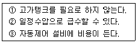
- 부스터방식
- 층별식 급수 조닝방식
- 고가수조방식
- 압력수조방식
(정답률: 69%)
90. 밀폐식 온수난방 배관에 대한 설명 중 옳지 않은 것은?
- 개방식에 비해 순환 수량이 적다.
- 배관경이 적어지고 방열기도 적게 할 수 있다.
- 팽창탱크를 사용한다.
- 배관내의 온수온도는 70℃ 이하이다.
(정답률: 63%)
91. 급수관의 길이가 15m, 내경이 40mm일 때 관내 유수속도가 2m/s라면 이때의 마찰손실수두는? (단, 마찰손실계수 λ=0.04 이다.)
- 1.5m
- 3.06m
- 6.08m
- 6.12m
(정답률: 53%)
92. 하트 포트(Hart ford) 배관법과 관계없는 것은?
- 보일러 내의 안전 저수면 보다 높은 위치에 환수관을 접속 한다.
- 저압증기 난방에서 보일러 주변의 배관에 사용한다.
- 보일러 내의 수면이 안전수위 이하로 내려가기 쉽다.
- 환수주관에 침적된 찌꺼기를 보일러에 유입시키지 않는다.
(정답률: 70%)
93. 도시가스에서 고압이라 함은 얼마이상의 압력을 뜻하는가?
- 0.1MPa 이상
- 1MPa 이상
- 10MPa 이상
- 100MPa 이상
(정답률: 77%)
94. 루프통기방식에 의해 등가 할 수 있는 기구수와 통기수직관과 최상류 기구까지의 거리로 맞는 것은?
- 10개 이내, 8.5m 이내
- 8개 이내, 7.5m 이내
- 10개 이내, 7.5m 이내
- 8개 이내, 8.5m 이내
(정답률: 40%)
95. 병원, 연구소 등에서 발생하는 배수로 하수도에 직접 방류할 수 없는 유독한 물질을 함유한 배수를 무엇이라 하는가?
- 오수
- 특수배수
- 우수
- 잡배수
(정답률: 78%)
96. 호칭지름 20A의 강관을 곡률반지름 200mm로서 120° 의 각도로 구부릴 때 파이프의 곡선 길이는 약 몇 mm인가?
- 390
- 4⑤
- 419
- 487
(정답률: 62%)
97. 보일러에 경수를 사용해서는 안 되는 원인으로 가장 적합한 설명은?
- 배관내에 워터 해머를 발생시키는 원인이 되기 때문
- 보일러의 효율을 저하시킬 수 있는 원인이 되기 때문
- 연수나 적수에 비해 열전달이 크기 때문
- 급탕과 공용으로 이용할 수 없기 때문
(정답률: 60%)
98. 증기트랩에 관한 설명으로서 맞는 것은?
- 에어 리턴식이나 진공 환수식 증기배관의 방열기 및 관말 트랩이나 고압배관에 사용되는 것이 열동식 트랩이다.
- 중앙, 저압의 증기 환수용으로 사용되는 것이 버킷 트랩이다.
- 다량의 응축수를 처리하는 곳에 사용되며, 고압증기용 기기 부속 트랩이 틀로트 트랩이다.
- 고압, 중앙, 저압에 사용되며 작동시 구조상 증기가 약간 새는 결점이 있는 것이 충격식 트랩이다.
(정답률: 38%)
99. 냉매 배관에서 압축기 흡입관의 시공상 주의점이다. 틀린 것은?
- 압축기가 증발기보다 밑에 있는 경우 흡입관은 작은 트랩을 통화한 후 증발기 상부보다 높은 위치까지 올려 압축기로 가게 한다.
- 흡입관의 입상이 매우 길 때는 유귀환을 쉽게 하기 위하여 약 20m 마다 중간에 트랩을 설치한다.
- 각각의 증발기에서 흡입 주관으로 들어가는 관은 주관위에서 접속한다.
- 2대 이상의 증발기가 있어도 부하의 변동이 그다지 크지 않은 경우는 1개의 입상관으로 충분하다.
(정답률: 57%)
100. 다음 중 주철관 이음 방식이 아닌 것은?
- 플라스턴 이음
- 소켓 이음
- 빅토릭 이음
- 타이튼 이음
(정답률: 32%)
= 1 MPa + 0.099 NPa
= 1.099 MPa
따라서 정답은 "1.099" 이다.